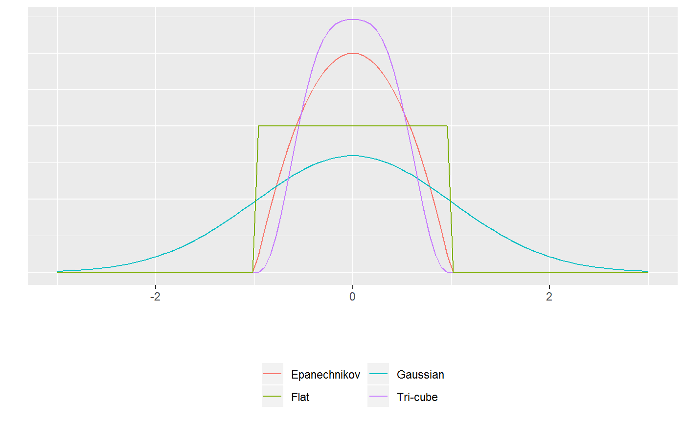

Theory and Methods
Daniel D. Sjoberg
2018-12-01
TheoryMethods.RmdIntroduction
The sjosmooth package (pronounced sō smüt͟h) was built to perform kernel smoothing on any type of regression model, but the focus is on censored time-to-event or survival data. The package provides kernel smoothed estimates of survival probabilities at specified times, as well as other outcomes from survival regression models. The sm package is closely related to the sjosmooth package in that it also performs kernel smoothing with censored time-to-event data; however, the sm package only allows for univariate estimation of a survival quantile (i.e. median survival time) using the Gaussain kernel (sm::sm.survival()). sjosmooth allows for the use of other kernels and for an n-dimensional covarite smoothing matrix.
I’ll do a brief review of the theory underlying kernel smoothing, and a brief review on simulating time-to-event data. Other vignettes focus on the usage of the sjosmooth package in the univariate setting, and for obtaiing kernel-smoothed survival estimates for 2 or more covarites.

simplystatistics.org. loess explained in a GIF
Kernel Smoothing Theory
Kernel smoothing is a technique for estimating a function when a parametric model for the function is unknown. The kernel smoothing methods utilized in the sjosmooth package are described in detail in the sixth chapter of the second edition of Hastie, Tibshirani, and Friedman’s book entitled The Elements of Statistical Learning: Data Mining, Inference, and Prediction.
The sjosmooth package currently supports four kernels: Epanechnikov, Tri-cube, Gaussian, and flat. The kernel specifies how much weight is given to each observation in your dataset when performing weighted regression. The figure below illustrates three kernels.

For the Epanechnikov, Tri-cube, and flat kernels, the \(\lambda\) paramter is on the standardized scale. For example, if \(\lambda = 1\) then observations within 1 standard deviation would be included in the kernel-weighted estimte. If \(\lambda = 0.5\) then only observations within half a standard deviation would be included.
Epanechnikov kernel
The Epanechnikov quadratic kernel is
\[
K_\lambda(x_0, x) = D\Big( \frac{||x - x_0||}{\lambda} \Big)
\] with \[
D(t) =
\begin{cases}
\frac{3}{4}(1-t^2) & |t| \le 1 \\
0 & |t| > 1 \\
\end{cases}
\] The \(\lambda\) paramter is the radius of the circle (or hypersphere for higher dimensions). Any observation that is further than \(\lambda\) units from \(x_0\) is not included in the weighted estimate. Observations closer to \(x_0\) recieve higher weight.
Tri-cube kernel
The tri-cube kernel is similalry defined similarly to the Epanechnikov kernel, except \[ D(t) = \begin{cases} (1-|t|^3)^3 & |t| \le 1 \\ 0 & |t| > 1 \\ \end{cases} \] The parameter has a similar interpretation here as it does with the Epanechnikov kernel.
Gaussian kernel
The Gaussian kernel is given by \[ K_\lambda(x_0, x) = \frac{1}{\sqrt{2\pi\lambda^2}^N} exp\Bigg(-\frac{||x - x_0||^2}{2\lambda^2}\Bigg) \] where \(N\) is the dimension of the covariate, or predictor, vector. Here, the weights are defined by the Gaussian distribution and is the standard deviation. The primary difference here is that all observations are included in the estimation at every point; although, observations further from our point estimate, \(x_0\), will be included with much less weight.
Simulating time-to-event data
Next, let’s simulate some data that we will later to get experience using the sjosmooth package. We’ll simulate the relationship between the predictors and the outcome to be non-linear (when using the Cox regression model).
The Cox proportional hazards regression estimates the hazard, \(h(t)\) \[ h(t) = h_0(t)exp(\boldsymbol{X}\beta) \] where \(h_0(t)\) is the baseline hazard and \(\boldsymbol{X}\beta\) is the linear predictor. We’re going to keep these simulations simple and assume a constant baseline hazard of 1 (i.e. \(h_0(t) = 1\)). As a result the cumulative baseline hazard takes the form \(H_0(t) = t\). The survival probability function is \[ S(t; X) = exp(-H_0(t)*exp(\boldsymbol{X}\beta)) \] which is simply \(1 - F(t; \boldsymbol{X})\). \(F(t; X)\) is well known to follow a uniform distribution (\(U(0,1)\)). If \(U \sim U(0,1)\) it follows that \(1 - U \sim U(0,1)\). Therefore, \(S(t; X) \sim U(0,1)\). We can use these results to simulate survival data from a Cox regression model. Survival times, \(T\), can be simulated by \[ T = H_0^{-1}(- \log (U)exp(-\boldsymbol{X}\beta)) \] Becuase we’ve assumed a simple baseline hazard, \(H_0^{-1}(t) = t\). Therefore, \[ T = - \log (U)exp(-\boldsymbol{X}\beta) \]